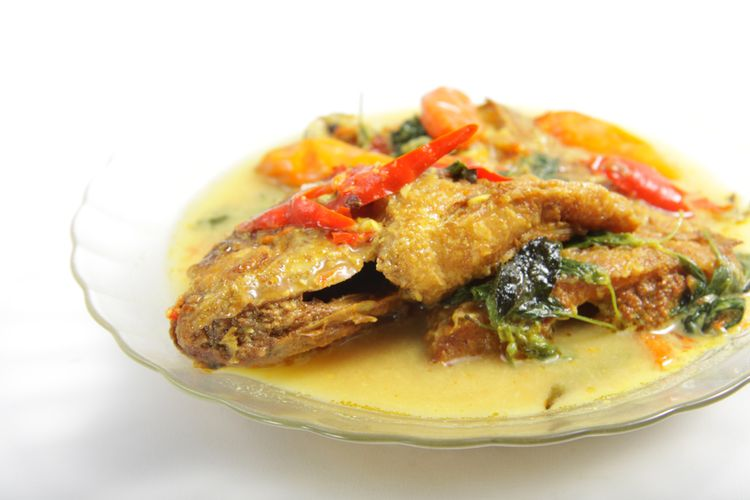

Selain olahan daging, ikan dikenal sebagai salah satu sumber protein yang baik bagi tubuh. Di Indonesia sendiri ikan menjadi santapan paling disukai dan sangat mudah untuk dijumpai. Ikan memiliki nutrisi tinggi, bahkan lebih tinggi dibanding daging. Ditambah lagi, harga ikan mungkin lebih terjangkau jika dibandingkan dengan daging, baik daging sapi, kambing atau ayam.
Buat kamu yang suka makan ikan tentunya selalu berusaha untuk mengolah ikan laut menjadi masakan yang lezat dan menggugah selera. Nah sekarang ini kamu nggak perlu repot-repot lagi, karena banyak sekali resep lezat untuk mengolah ikan menjadi makanan yang disukai.
1. Ikan Bawal Kukus
Bahan yang diperlukan :
- 500 gr atau 2 ekor ikan bawal putih
- 1 jempol jahe, iris tipis
- 2 bawang putih, iris
- 1 bawang merah, iris
- 1 cabe merah keriting (boleh ganti rawit)
- 2 sdm kecap asin
- 1 sdm minyak wijen
- 50 ml air
- 1 cubit garam
- 1 sdm perasan jeruk nipis
- Daun ketumbar secukupnya
Cara membuat :
- Cuci dan bersihkan ikan bawal.
- Beri sedikit garam dan air jeruk nipis
- Taruh ikan dalam sebuah mangkuk dan masukan jahe, bawang merah, bawang putih, kecap asin, minyak wijen dan air.
- Kukus atau tim dalam wajan tertutup selama kurang lebih 15 menit.
- Sesaat sebelum matang masukan daun ketumbar.
2. Ikan kembung sambalado
Bahan-bahan:
- 6 ekor ikan kembung
- 25 buah cabe merah
- 4 siung bawang merah
- 2 siung bawang putih
- 1/3 bagian tomat
- Cabe rawit sesuai selera
- Sedikit jeruk nipis
- Garam, gula, dan kaldu bubuk secukupnya
Cara memasak :
- Bersihkan isi perut ikan, dan cuci bersih, lalu lumuri rata dengan jeruk nipis, garam, dan ketumbar bubuk secukupnya, lalu sisihkan
- Ikan yang sudah dimarinasi, digoreng kering, lalu sisihkan.
- Panaskan minyak secukupnya, goreng sebentar cabe merah, bawang merah, bawang putih, dan tomat sampai setengah layu.
- Ulek kasar bahan sambal, dan masukkan cabe rawitnya untuk sekalian diulek.
- Panaskan minyak yang agak banyak, tumis bumbu yang telah diulek.
- Tambahkan gula seujung sendok, garam dan kaldu bubuk secukupnya.
- Lalu tambahkan sedikit perasan jeruk nipis.
- Koreksi rasa, jika sudah sesuai selera, masak sambal sampai tidak terasa cabe mentah lagi
- Terakhir campur ikan gorengnya dengan sambal, aduk rata, selesai.
3. Resep masakan ikan Tenggiri asam pedas
Bahan yang diperlukan:
- 500 gr ikan tenggiri
- 1 buah tomat, potong-potong
- Rawit merah secukupnya
- Minyak untuk menumis
- 1 sdm asam jawa, larutkan dgn sedikit air, buang ampasnya.
- Garam gula secukupnya
- Air matang secukupnya
Bumbu yang dihaluskan :
- 10 butir bawang merah
- 2 siung bawang putih
- 2 cm lengkuas
- 3 cm kunyit
- 1 batang sereh, ambil putihnya
- 10 Cabe merah keriting
- 3 butir kemiri
- 1 sdm terasi
- 5 lembar daun jeruk
- 2 lembar daun salam
Cara memasak :
- Potong-potong ikan, bersihkan lalu baluri dengan air jeruk kunci dan garam, diamkan 15 menit lalu bilas.
- Tumis bumbu halus sebentar, lalu masukkan daun salam, daun jeruk, tumis sampai wangi.
- Masukkan air matang secukupnya dan air asam jawa.
- Tambahkan garam gula, tunggu mendidih lalu masukkan ikan, masak sampai ikan matang
- Terakhir masukkan tomat dan cabe rawit, aduk rata.
- Koreksi rasa, angkat, sajikan.
4.Penget gurame
Bahan-bahan:
- 1 kg ikan gurame ukuran kecil, bersihkan dan kerat-kerat
- 1 ikat lokio, rajang besar-besar
Bumbu halus:
- 3 siung bawang putih
- 6 siung bawang merah
- 5 butir kemiri
- 8 buah cabai rawit
- 3 cm kunyit
- 1 sdt ketumbar bubuk
Bumbu tambahan:
- 3 cm lengkuas, geprek
- 3 lembar daun jeruk
- Cabai rawit utuh secukupnya
- 10 buah belimbing wuluh, potong-potong
Cara membuat:
- Tumis bumbu halus bersama lengkuas dan daun jeruk hingga harum dan matang, beri air secukupnya tunggu hingga mendidih.
- Bumbui dengan gula, garam, merica dan kaldu bubuk, cicipi rasanya.
- Masukkan dan tata ikan ke dalam wajan, beri potongan belimbing wuluh, cabai rawit utuh dan potongan lokio, pastikan ikan terendam kuah semua.
- Kecilkan api, masak hingga ikan matang dan kuah menyusut
- Sajikan bersama nasi hangat
5. Resep masakan ikan salem siram cabe pete
Bahan-bahan:
- 4 buah ikan salem ukuran sedang
- 300 cc air
- Minyak untuk menumis dan menggoreng
- 2 sdm saus tiram
- 2 sdm kecap manis
- 3 lembar daun salam
- Lada dan garam secukupnya
Bumbu yang diiris:
- 5 buah cabe hijau besar
- 8 siung bawang merah
- 5 siung bawang putih
- 1 genggam pete
- 5 buah cabe merah besar
- 10 buah cabe rawit merah
- 1 ruas lengkuas
- 1 ruas jahe
Cara membuat:
- Goreng ikan salem hingga matang, tiriskan.
- Tumis semua bumbu bersama daun salam hingga harum.
- Masukkan air, tambahkan saus tiram, kecap, lada, dan garam.
- Setelah mendidih, masak sebentar saja agar bumbu tetap segar tidak terlalu layu.
- Susun salem goreng di atas piring, siram dengan bumbu. Siap disajikan